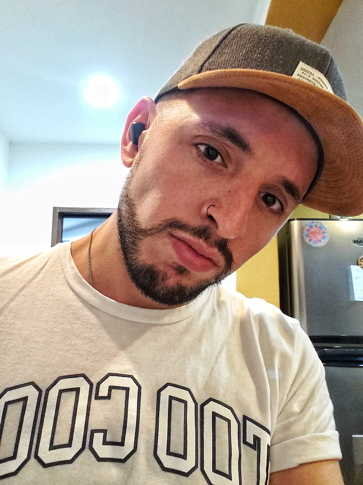

Bienvenidos a mi primer blog!
Tu música, en mi espacio.
Este lugar está dedicado a las canciones que está sonando en tu Spotify en esta cuarentena.
Te pongo al tanto del top 3 de los hits en Argentina!
- Favorito - Camilo
- Yo Perreo sola - Bad Bunny
- Safaera - Bad Bunny ft. Jowell y Randy
Los artistas que estan explotando esta 40tini:
- Dua Lipa
- Karol G
- The Weekend
Nuestra quarantine está 🔥
Followme on Facebook! ⤵️
